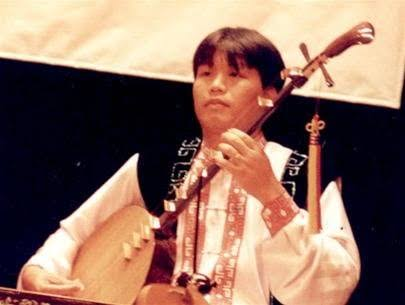
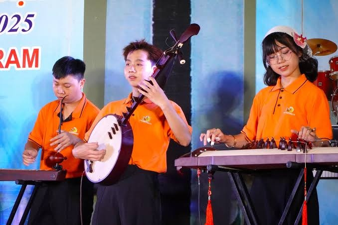
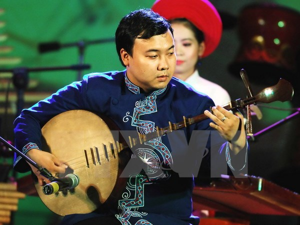
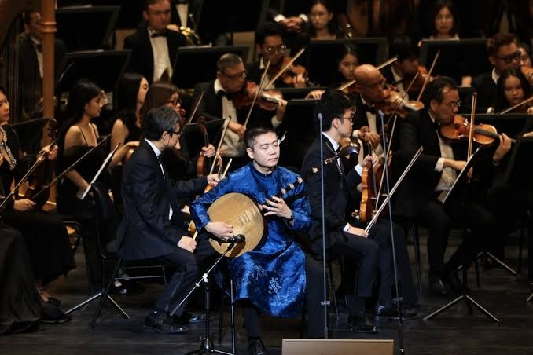

Where Dan Nguyet Is Performed
Dan Nguyet accompanies genres such as Cheo, Chau Van, Ca Hue, Don Ca Tai Tu, and Cai Luong.




Dan Nguyet accompanies genres such as Cheo, Chau Van, Ca Hue, Don Ca Tai Tu, and Cai Luong.



